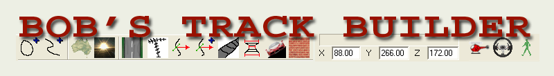
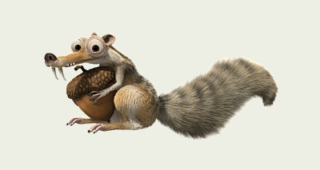
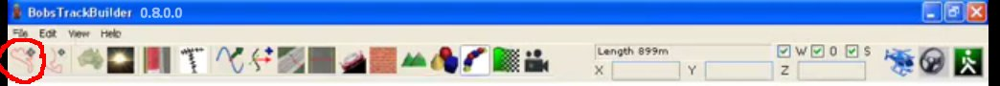
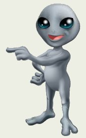

vnovak.com, captured 13 February 2020. Preserved in viper-racing-modding; see README.


Bobs Track Builder Pro can export tracks you make to:
1 - rFactor
2 - Richard Burns Rally
3 - Racer
4 - DirectX (for import into other 3d tools)
To put a track into Viper Racing you must export a track made in btb to a game called "Racer" first.
You then convert the Racer ".dof" files to Viper Racing ".mod" format using Zmodeler1.07b.
At the bottom of this page there is a link to my tutorial on how to do that.
Here is a bobs track builder to Racer quick 2 minute basic video on how to work btb.
CLICK ANY IMAGE ON THIS PAGE TO SEE FULL SIZE
For this tutorial I will show you the basics of getting a track into Viper Racing.
Other programs required are listed in this other track tutorial here:
One big thing you must know about Viper Racing tracks,they must be very smooth
compared to any other racing games out there.
The only other game I know of that needs a smooth track is Nascar Heat.
A panel length of 5 maximum in btb is used for hilly track making.The lower the number,the more polygons are used,making a smoother hill.
For a flat track without hills a panel length of 20 is acceptable.A btb image where that is set is shown later on.
You need a few more things before we actually start the main tutorial.
If you have Vista or newer Windows operating system you MUST have
DirectX9c complete Package installed.It is required for BTB to work.
It doesn't affect the Direct X version you have now,it just adds only what your system needs to run certain programs that require files from an older version of Direct x.
Download it to an empty folder,run the "directx_Jun2010_redist.exe" to extract all the files into the same folder,then run the "DXSETUP.exe" file.
It usually takes a minute untill all required files are installed elsewhere.When you get the finished notification popup,then you can delete all the extracted files in this folder.
That part is done.
Now install "Bobs Track Builder Pro" also called "Bobs Track Builder 0.8.0.0".BTB home page is here:
You will be exporting the track you finish making for "Viper Racing" to a game called "Racer" first.
The second program you will be using to convert ".dof" files ( Racer model format ) to ".mod" ( VR model format ) files is Zmodeler1.07b.
So if you don't have the "Racer" game,now is the time to make a few empty folders in C drive.
3 folders required are "C:/Racer/data/tracks" <<< self explanitory , but just in case ( tracks folder inside data folder inside Racer folder ).
If you get a weird Bobs Track Builder message of something missing when exporting your track to Racer, just ignore it by clicking "skip","export anyway", or whatever.

Don't forget..you can click on any image to see an enlarged version.
Start BTB and you will see an extra box pop up about "x packs".Close that box as it's not needed for this basic tutorial.
Now you will see this screen on the right with 4 sections.
To make a track and ground areas you use the top left section.
To add objects like trees you use the top right section mainly looking at the track from top - down.
After you make the track and ground/grass areas,you have to rotate the top right track colored image to get that view to add objects like trees,walls or buildings.
We will skip adding objects to make this basic tutorial a lot shorter.There are a lot of youtube btb tutorials on how to do that.
Here is a page with tips on how to do a bunch of stuff in btb.
Bobs Track Builder User Manual and more on this site.
More good BTB video tutorials here.
The bottom 2 sections in btb are used to move the dots ( nodes ) up or down to create hills on the track.Usually moving a node one or two dot spaces up or down are enough for a gentle hill.

To start making a track for Viper Racing,first you set options as shown on the pic on the right.
Just click the "View","Options" and set the options in the "Main" tab as shown.
When these options are set, click ok and then click the icon circled below:
This icon is for making a closed track ( point a back to the start,point a ).
The open track icon is to the right of that.Open tracks ( point a to point b ) are not used in Viper Racing.


Now to start a closed track, left click anywhere in the area shown on the btb image on the right and move mouse pointer left and click to make a node ( dot ) . For a simple track just make a few nodes as shown on the right for the basic design you had in mind for the rough shape of your track.

After you have that done,while on this screen there are more important settings to do as shown on the right.Just click the circled icon and this box appears.Set the options as shown.

For Viper Racing tracks you must set the correct width of any track you make. Just click on the circled icon ( Edit the width of the track ) and change the "width multiplier" from the default 1.00 to 8.00,then click the close button and continue to the next step.

Next you must set the track surface properties to lower the polygon count for a Viper Racing track.The game is limited to a certain amount of polygons because of the limited game engine technology in 1998.Click the circled icon (Edit Track Surface Properties) and look at the "panel length" number ( default is 5.00 ).For a hilly track 5.00 is ok,but just remember,the lower the panel length number the higher the polygons will be in the track and grass surfaces.For a flat track ( no hills ),20.00 is a good setting for VR tracks.
One more very important thing to do in here to reduce polygons is setting the track width to one polygon,not the default 4 polygons wide ( VR tracks are happy with 1 polygon width ).
At the bottom of this popup box you will see 5 small square dots.You only want 2 (between each "dot" means one polygon width),here you see a 4 polygon width track.You want to delete 3 dots,the 2 on the left and the far right one,leaving 1 dot in the center and 1 dot to the right of that one.Left click on the dot on the far right ( it will turn red ),then click your keyboard "delete" key.Do the same for the 2 dots to the left of center.

When done you will see only 2 "dots" as shown on the right.You can "x" out of that box now.

At this point you should change the track to a more Viper Racing friendly length.For example the original Silverdale track is approx 3000 meters long.Here is how to easily change the length to three thousand meters.Click the circled icon( Move Node and Control Points ) as shown in the image on the right to bring up another options/settings popup.Click the "resize" tab.Change the default 0.00 number to 3000.00 ( means meters ).Click the "Go" button.Now "x" out of this box.

Here is how to modify the track surface to make hills before we add any grass or ground surfaces.Since you had the ( Move Node and Control Points ) ,shown as number 1 on the right, clicked previously,you don't have to click it again.The nodes ( dots ) on the track surface are what you move in either the lower left or lower right box to make hills. To edit "nodes" ( the dots you see on the track ) to make hills,just left click on one of the nodes.For this quick tut we will just make two.Hold the mouse button down and slowly drag down or up as shown.NOTE:Sometimes you might have to wait as much as 30 seconds after clicking on the first node before you can move it.No idea why this happens.
The nodes you click and drag after the first one, move as soon as you move your mouse.
NOTE: Usually moving a node one or two dot spaces up or down are enough for a gentle hill.
At any time you want to fly over or drive on the track you are making,you can click the helicopter or steering wheel on the top right section.To stop the motion at any time you click the walking man icon.
You can also move the nodes in the top left view at any time, in order to sharpen your curves ( too sharp in VR is not a good idea ) or just make a track with lots of curves on a straightaway.You can add more nodes on the track surface in the top left view by holding your "ctrl" key down and left clicking where you want on the track.For example you might want to do this to make more curves on a straight section.When you are done messing around with this node moving part,we can get to adding driveable grass surfaces to both sides of the track.
To add more grass/ground surfaces,you can click the "help" or find btb tutorials on youtube on how to do that.

Now let's put some driveable grass on both sides of the track.
Click on the circled icon ( Edit surrounding terrain ) as shown on the pic on the right.Click on the "add" tab ( usually shows first as default anyway ),then set the numbers as shown.Click "create" button.Don't close this box yet.You will merge all left and right grass parts in the next image.

To merge all left grass parts listed as shown,left click on the "Left1" at the top,hold your "shift" key down and click on the last "Left*" word.All Left parts should be hilighted as shown.Click the "merge" button.Now you will have only "Left1" showing.Do the same with all the "Right" ones and "merge" as before.

Now you should have "Left1" and "Right1" showing.Close that box ( x out of it ).

This basic track is ready to be "saved as" and exported to the "Racer" folder you made earlier in this tut.

Before exporting, you want to save your track first just in case you want to add more objects to it before you make the final version. Click "file" / "save as" and give your track a name up to 8 digits long if possible,10 digits maximum.

Now you are ready to export the track to your "Racer" folder you made earlier in this tut.Click "file" / "export" , then another box pops up.

Click the "Racer" tab then browse for your "Racer" folder using the button on the right of the first blank space as shown on the right. Use the same name "Track Name" for the track as you put in the "save as" option previously.Now click the "Export" button and wait till it says "Complete" on the left.Then click the "Close" button.

Finally click "file" / "exit" to close btb.

If you ever want to work on your track to change some things or add trees or whatever,start btb and click "file" / "open".

In this box that pops up, left click on the track you want to work on and click "open".Do what you gotta do with the track and do the saving and exporting thingy again.
Good luck with your track making!

FOR THE LAST PART OF PUTTING THE TRACK INTO VIPER RACING CONTINUE ON TO THIS TUTORIAL